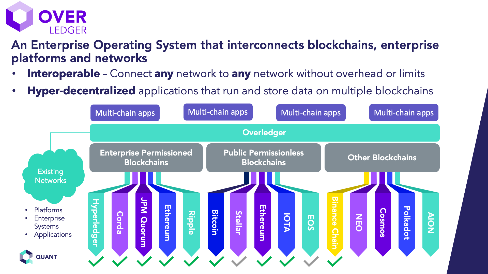

the benefits of operating systems
advantages of operating systems
- OS Provides Graphical User Interface (GUI) in the form of menu, icons, and buttons.
- OS manage the input and output. All I/O devices are managed by OS.
- OS manage resource allocation. OS gives the resources to the process in such a way
that all processes can use the resources in an efficient way.
- OS is responsible to synchronize the processes. Monitors and semaphores are very commonly used to synchronize the processes.
